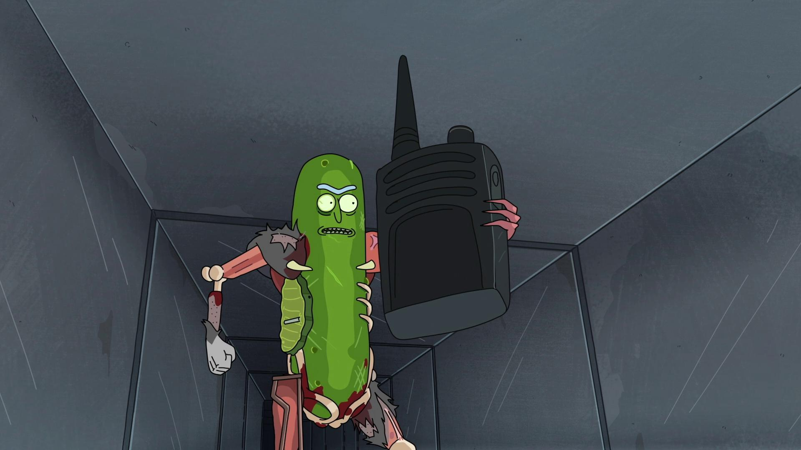

About Pick Rick
the eccentric scientist Rick Sanchez turns himself into a pickle just as he and his family are scheduled to attend a therapy session.
picke rick and his upgrades
Pickle Rick's Attributes
- In this form, Rick's only functional body parts are his brain, ears, eyes and a mouth.
- In all other regards, he became an ordinary pickle
- He is vulnerable to dehydration and can be damaged (Although replacing a lost portion with an ordinary pickle just left a scar when reverting back to human form).
Pickle Rick's friends
Pickle rick has some intesting friends and mortal enemy Jaguar. Click on links below to read abou them: